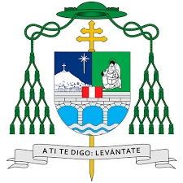

Lista de catálogos del archivo arzobispal
A.Libro_Documentación_sobre_la_muerte para la WEB
Acción Católica
BEATERIO DE AMPARADAS
BEATERIO DE COPACABANA
BEATERIO DE LA CONCEPCIÓN DE HUÁNUCO
BEATERIO DE LAS CAMILAS
BEATERIO DE MERCEDARIAS
BEATERIO DEL PATROCINIO
Catálogo Cofradías Archivo Arzobispal Lima para la Web
Catalogo-Papeles-imp.-y-Emancipacion_AAL.WEB
Catalogo-Vida-eclesiastica-Perú-colonial-y-republicano-tomo-2-Melecio-Tineo
Causas Criminales De Matrimonios
Causas de Esponsales
Causas de Litigios de Matrimonios
Cedulas
Cedulas87
COMPAÑIA DE JESUS
CONGREGACIÓN DE SAN FELIPE NERI
Congreso Eucarístico
Divorcios
Divorcios43
Monasterio de la Caridad
Monasterio de Clarisas Capuchinas
Monasterio de la Concepción
Monasterio de la Encarnación
Monasterio de las Descalzas de San José
MONASTERIO DE LAS MERCEDARIAS
MONASTERIO DE LAS NAZARENAS
Monasterio de la Santísima Trinidad
MONASTERIO DE LAS TRINITARIAS
MONASTERIO DE SANTA CATALINA
MONASTERIO DE SANTA CLARA
MONASTERIO DE SANTA ROSA
MONASTERIO DE SANTA TERESA
Monasterio del Prado
Monasterio Sagrado Corazón de Jesus - San Pedro
Monasterio del Carmen
Nulidad de Matrimonios
Orden San Agustín Archivo Arzobispal Lima. WEB
ORDEN DE BATLEMITAS
ORDEN DE BENEDICTINOS
ORDEN DE NUESTRA SEÑORA DEL CARMEN - CARMELITAS
ORDEN DE NUESTRA SEÑORA DE LA MERCED
ORDEN DE PREDICADORES DE SANTO DOMINGO
ORDEN DE SAN FRANCISCO
ORDEN DE SAN JUAN DE DIOS
ORDEN CRUCIFERA DE NUESTRA SEÑORA DE LA BUENAMUERTE
ORDEN MÍNIMOS DE SAN FRANCISCO DE PAULA
SEMINARIO SANTO TORIBIO
Serie - Primicias
SERIE APELACIONES DE AREQUIPA
SERIE APELACIONES DE CHILE
SERIE APELACIONES DE CUZCO
SERIE APELaciones DE HUAMANGA
SERIE APELACIONES DE PANAMÁ
SERIE APELACIONES DE QUITO
SERIE APELACIONES DE TRUJILLO
SERIE APELACIONES DIVERSAS
Serie Capellanías siglos XIX-XX
Serie Capellanías siglos XVI-XVII
Serie Capellanías siglo XVIII
Serie Censos
Serie- Amancebamientos
Serie- Hechicerías e Idolatrías